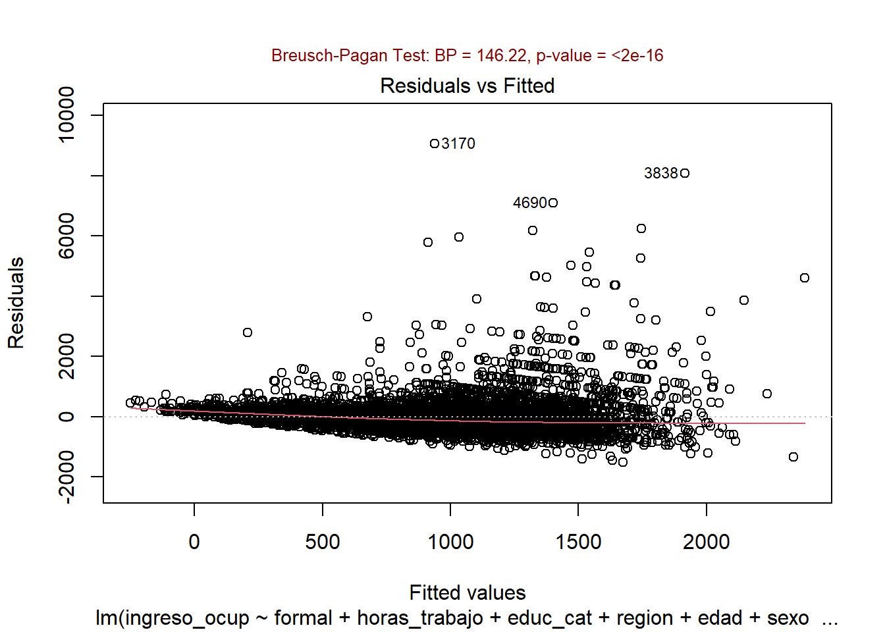
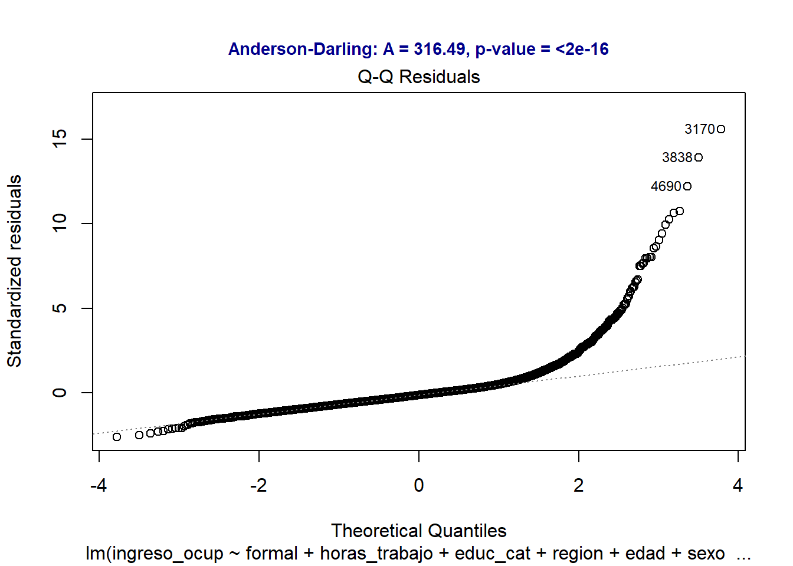
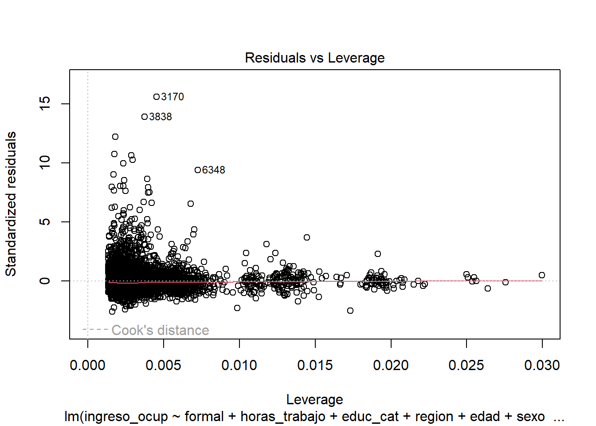
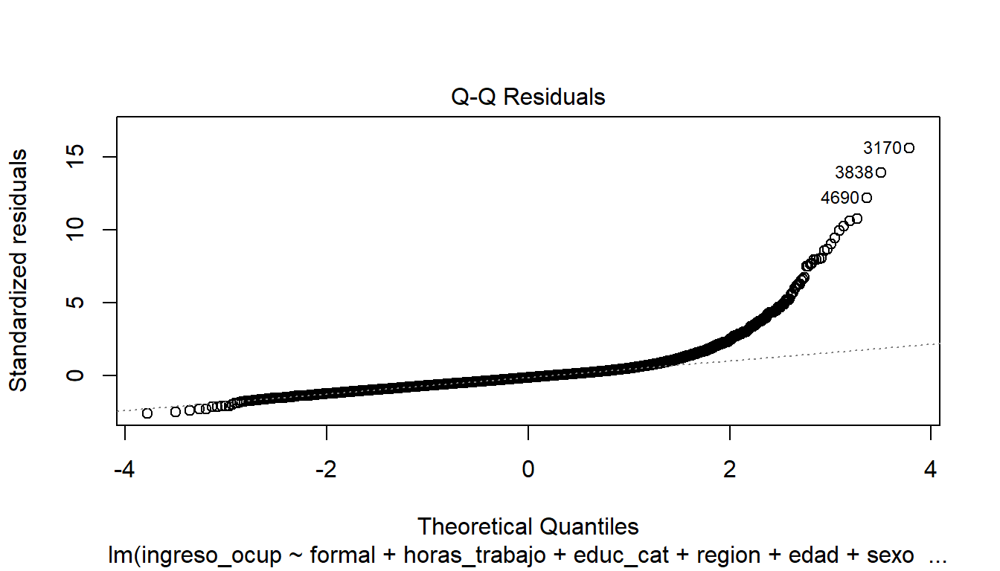

| Término | Estimación | Error Est. | Estadístico t | p-valor |
|---|---|---|---|---|
| (Intercept) | -31.387 | 80.120 | -0.392 | 0.695 |
| formalSi | 301.373 | 18.738 | 16.083 | 0.000 |
| horas_trabajo | 10.685 | 0.507 | 21.083 | 0.000 |
| educ_catPrimario | 103.327 | 57.909 | 1.784 | 0.074 |
| educ_catSecundario | 237.627 | 57.295 | 4.147 | 0.000 |
| educ_catSuperior | 606.553 | 58.631 | 10.345 | 0.000 |
| regionGran Buenos Aires | 139.120 | 31.028 | 4.484 | 0.000 |
| regionNoreste | -138.258 | 35.808 | -3.861 | 0.000 |
| regionNoroeste | -135.490 | 27.324 | -4.959 | 0.000 |
| regionPampeana | 92.236 | 27.117 | 3.401 | 0.001 |
| regionPatagonia | 372.126 | 31.397 | 11.852 | 0.000 |
| edad | 4.409 | 0.768 | 5.745 | 0.000 |
| sexoMujer | -152.074 | 16.042 | -9.480 | 0.000 |
| est_civilseparado o divorciado | -119.809 | 30.625 | -3.912 | 0.000 |
| est_civilsoltero | -137.890 | 21.782 | -6.331 | 0.000 |
| est_civilunido | -63.006 | 20.973 | -3.004 | 0.003 |
| est_civilviudo | -183.927 | 64.599 | -2.847 | 0.004 |
| ant_laboral1 a 5 años | -23.976 | 38.658 | -0.620 | 0.535 |
| ant_laboral6 meses a 1 año | -81.538 | 49.308 | -1.654 | 0.098 |
| ant_laboralEntre 3 y 6 meses | -52.459 | 52.688 | -0.996 | 0.319 |
| ant_laboralMas de 5 años | 43.689 | 39.919 | 1.094 | 0.274 |
| ant_laboralMenos de 1 mes | -92.420 | 84.885 | -1.089 | 0.276 |
TP final de Regresión Avanzada
Consigna I: Regresión Lineal
Modelo 1:
Modelo de Selección Automática por Criterio de Información de Akaike (AIC). Se busca equilibrio entre bondad de ajuste y complejidad.
Summary del Modelo 1:
Modelo 2:
Modelo de Selección Automática por Criterio de Información Bayesiano (BIC). Este modelo se seleccionó bajo el principio de parsimonia.
Summary del Modelo 2:
| Término | Estimación | Error Est. | Estadístico t | p-valor |
|---|---|---|---|---|
| (Intercept) | -96.008 | 72.845 | -1.318 | 0.188 |
| formalSi | 325.312 | 17.701 | 18.378 | 0.000 |
| horas_trabajo | 10.682 | 0.507 | 21.089 | 0.000 |
| educ_catPrimario | 114.441 | 57.823 | 1.979 | 0.048 |
| educ_catSecundario | 249.276 | 57.209 | 4.357 | 0.000 |
| educ_catSuperior | 618.675 | 58.515 | 10.573 | 0.000 |
| regionGran Buenos Aires | 135.205 | 31.050 | 4.354 | 0.000 |
| regionNoreste | -134.968 | 35.839 | -3.766 | 0.000 |
| regionNoroeste | -134.538 | 27.352 | -4.919 | 0.000 |
| regionPampeana | 89.017 | 27.131 | 3.281 | 0.001 |
| regionPatagonia | 370.224 | 31.425 | 11.781 | 0.000 |
| edad | 5.661 | 0.710 | 7.974 | 0.000 |
| sexoMujer | -151.990 | 16.054 | -9.468 | 0.000 |
| est_civilseparado o divorciado | -124.849 | 30.628 | -4.076 | 0.000 |
| est_civilsoltero | -144.305 | 21.744 | -6.636 | 0.000 |
| est_civilunido | -63.584 | 20.978 | -3.031 | 0.002 |
| est_civilviudo | -195.632 | 64.621 | -3.027 | 0.002 |
Modelo 3:
En teoría la instrucción y la experiencia son los motores principales de la productividad, por ende, del salario. Es por esto que elegí las variables educ_cat, horas_trabajo y formal como explicativas del ingreso_ocup.
Summary del Modelo 3:
| Término | Estimación | Error Est. | Estadístico t | p-valor |
|---|---|---|---|---|
| (Intercept) | -46.625 | 62.464 | -0.746 | 0.455 |
| educ_catPrimario | 100.630 | 60.958 | 1.651 | 0.099 |
| educ_catSecundario | 169.447 | 60.003 | 2.824 | 0.005 |
| educ_catSuperior | 523.156 | 61.284 | 8.537 | 0.000 |
| horas_trabajo | 12.274 | 0.518 | 23.676 | 0.000 |
| formalSi | 447.041 | 17.682 | 25.282 | 0.000 |
Comparación de los Modelos
| Modelo | Explicativas | CME | $R_{aj}^2$ | AIC | BIC |
|---|---|---|---|---|---|
| Mod AIC | sexo + edad + est_civil +region+ horas_trabajo +educ_cat + formal + ant_laboral | 339165.3 | 0.3273 | 100059.3 | 100214.9 |
| Mod BAIC | sexo + edad + est_civil +region+ horas_trabajo +educ_cat + formal + ant_laboral | 340028.6 | 0.3256 | 100070.6 | 100192.4 |
| Modelo Propio | educ_cat + horas_trabajo + formal | 379610.7 | 0.2471 | 100767.0 | 100814.4 |
El modelo mod_aic destaca en 3 de los 4 indicadores. Podemos concluir que es el modelo ganador.
Análisis de Residuos.
Cumplimiento de supuestos.
Homocedasticidad

En el gráfico de residuos vs ajustados, vemos que la varianza de los residuos aumenta con los valores ajustados (forma de abanico). El test de Breusch-Pagan nos da un valor de 146.22 con p-value < 2.2e-16. Se rechaza H0.
El modelo presenta heterocedasticidad, lo que significa que el error de nuestras predicciones no es constante. El test estadístico confirma que la variabilidad de los ingresos no se explica de igual manera para todos los niveles socioeconómicos; el modelo es más preciso para algunos grupos que para otros.
Normalidad

Los residuos se desvían fuertemente de la línea teórica, especialmente en la cola derecha con lo cual vemos que no hay normalidad.
El test de Anderson-Darling confirma la ausencia de normalidad.
Independencia de los Errores
dwtest(mod_aic) # Test de Durbin-Watson (H0: Autocorrelación nula)
Durbin-Watson test
data: mod_aic
DW = 1.8716, p-value = 1.127e-07
alternative hypothesis: true autocorrelation is greater than 0Durbin-Watson indica que existe autocorrelación positiva leve. El supuesto no se cumple estrictamente, aunque el DW está cerca de 2.
Multicolinealidad
#| label: tbl-vif
#| tbl-cap: "Análisis de Multicolinealidad (VIF)"
#| echo: false
#| message: false
#| warning: false
# 1. Calculamos VIF
vif_values <- car::vif(mod_aic)
# 2. Lo convertimos a una tabla limpia
# Nota: Usamos GVIF^(1/(2*Df)) si hay variables categóricas, que equivale al VIF tradicional
if(is.matrix(vif_values)) {
vif_df <- as.data.frame(vif_values) %>%
mutate(Variable = rownames(.)) %>%
rename(VIF = 3) # La tercera columna es el VIF ajustado
} else {
vif_df <- data.frame(Variable = names(vif_values), VIF = vif_values)
}
# 3. Formateo de tabla idéntico a tus otras tablas
vif_df %>%
dplyr::select(Variable, VIF) %>%
mutate(VIF = round(VIF, 3)) %>%
kable(caption = "Factores de Inflación de la Varianza (VIF)",
col.names = c("Variable Predictora", "Valor VIF")) %>%
kable_styling(full_width = F ) %>%
row_spec(0, background = "black", color = "white", bold = T)| Variable Predictora | Valor VIF | |
|---|---|---|
| formal | formal | 1.194 |
| horas_trabajo | horas_trabajo | 1.051 |
| educ_cat | educ_cat | 1.044 |
| region | region | 1.007 |
| edad | edad | 1.297 |
| sexo | sexo | 1.086 |
| est_civil | est_civil | 1.049 |
| ant_laboral | ant_laboral | 1.047 |
En general, valores de VIF mayores a 5 se consideran problemáticos. En este caso no tenemos ninguno.
No hay multicolinealidad problemática.
Observaciones Influyentes y Atípicas
# --- E. Observaciones Influyentes y Atípicas ---
dist_cook <- cooks.distance(mod_aic)
top_10_cook <- data.frame(
Observacion = names(sort(dist_cook, decreasing = TRUE)[1:10]),
Distancia_Cook = as.numeric(sort(dist_cook, decreasing = TRUE)[1:10])
)
top_10_cook %>%
mutate(Distancia_Cook = round(Distancia_Cook, 5)) %>%
kable(caption = "Análisis de puntos influyentes mediante Distancia de Cook",
col.names = c("Nro. de Observación (Fila)", "Distancia de Cook")) %>%
kable_styling(full_width = F, latex_options = "hold_position") %>%
row_spec(0, background = "black", color = "white", bold = T)| Nro. de Observación (Fila) | Distancia de Cook |
|---|---|
| 3170 | 0.05054 |
| 3838 | 0.03306 |
| 6348 | 0.02944 |
| 1244 | 0.01475 |
| 5129 | 0.01420 |
| 92 | 0.01335 |
| 3883 | 0.01323 |
| 4690 | 0.01240 |
| 1566 | 0.01148 |
| 5641 | 0.01056 |
La Distancia de Cook mide cuánto cambian los coeficientes del modelo cuando se excluye una observación particular. Como se observa en la Tabla, aunque se identifican las 10 observaciones con mayor impacto relativo, el valor máximo alcanzado (el de la observación
top_10_cook$Observacion[1][1] "3170"La Distancia de Cook mide cuánto cambian los coeficientes del modelo cuando se excluye una observación particular. Como se observa en la @tbl-cook-distance, aunque se identifican las 10 observaciones con mayor impacto relativo, el valor máximo alcanzado (el de la observación 3170) es de 0.05054. Dado que todos los valores están muy por debajo del umbral crítico…
plot(mod_aic, 5) # Leverage vs Residuos estandarizados (incluye Cook)
Running Code
When you click the Render button a document will be generated that includes both content and the output of embedded code. You can embed code like this:
criterios <- function(m) {
SCE <- deviance(m)
n <- length(residuals(m))
p <- length(coefficients(m))
cme <- SCE/(n-p)
r2aj <- summary(m)$adj.r.squared
tibble(CME = cme, R2Aj = r2aj, AIC = AIC(m), BIC = BIC(m))
}
map_dfr(list(mod_aic, mod_baic, mod_propio), criterios) %>%
mutate_all(round, 2) %>%
mutate(Modelo = c("Mod AIC", "Mod BAIC", "Modelo Propio")) %>%
dplyr::select(Modelo, CME, "$R_{aj}^2$" = R2Aj, AIC, BIC) %>%
kable(escape = FALSE, caption = "Comparación de métricas de ajuste") %>%
kable_styling(full_width = F, latex_options = "hold_position") %>%
row_spec(1, background = "#A9F5A9")| Modelo | CME | $R_{aj}^2$ | AIC | BIC |
|---|---|---|---|---|
| Mod AIC | 339165.3 | 0.33 | 100059.3 | 100214.9 |
| Mod BAIC | 340028.6 | 0.33 | 100070.6 | 100192.4 |
| Modelo Propio | 379610.7 | 0.25 | 100767.0 | 100814.4 |
plot(mod_aic, 1)
plot(mod_aic, 2)

You can add options to executable code like this
The echo: false option disables the printing of code (only output is displayed).